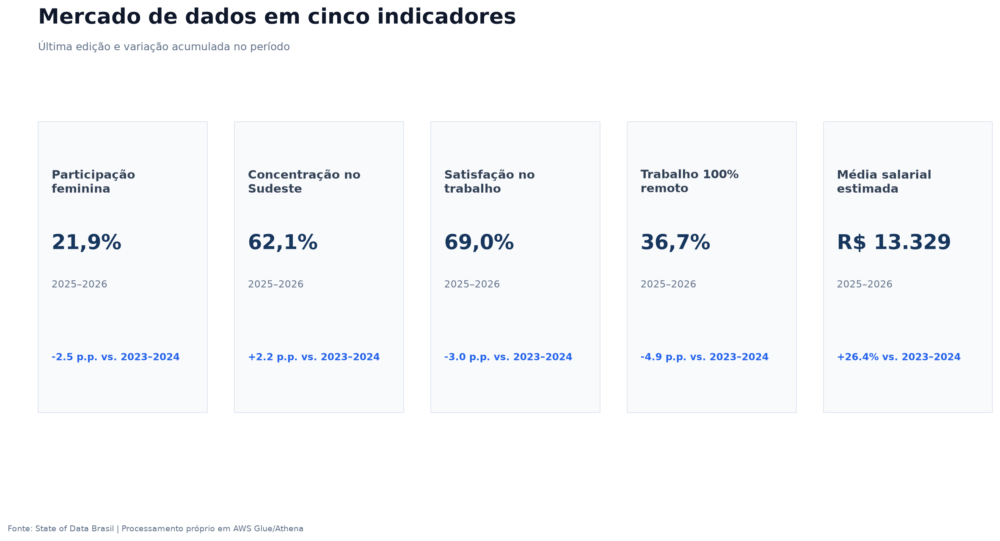
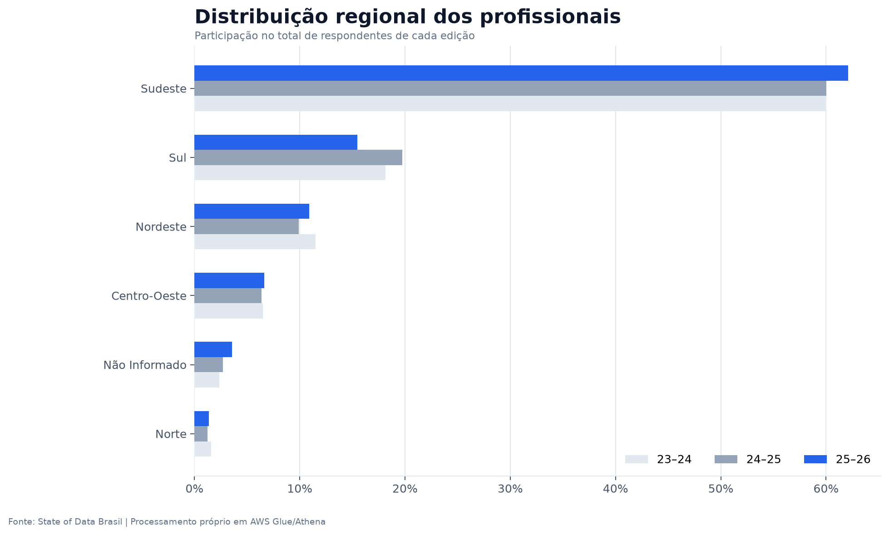
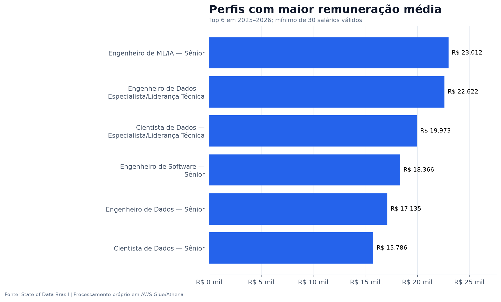
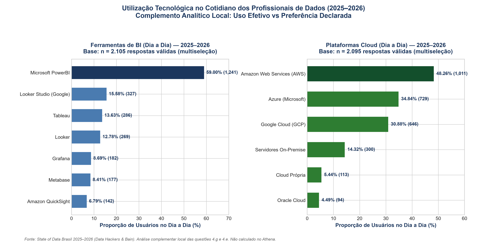
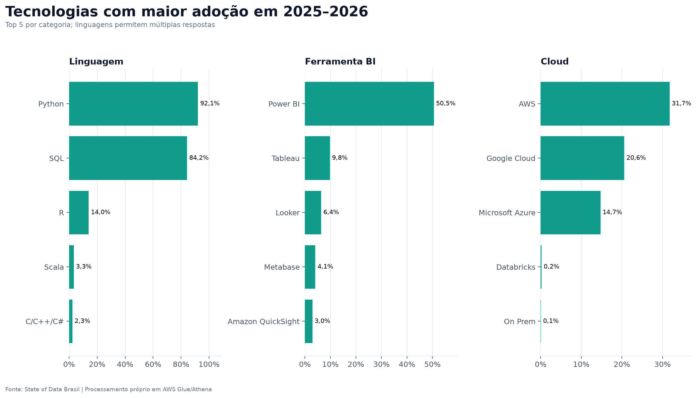
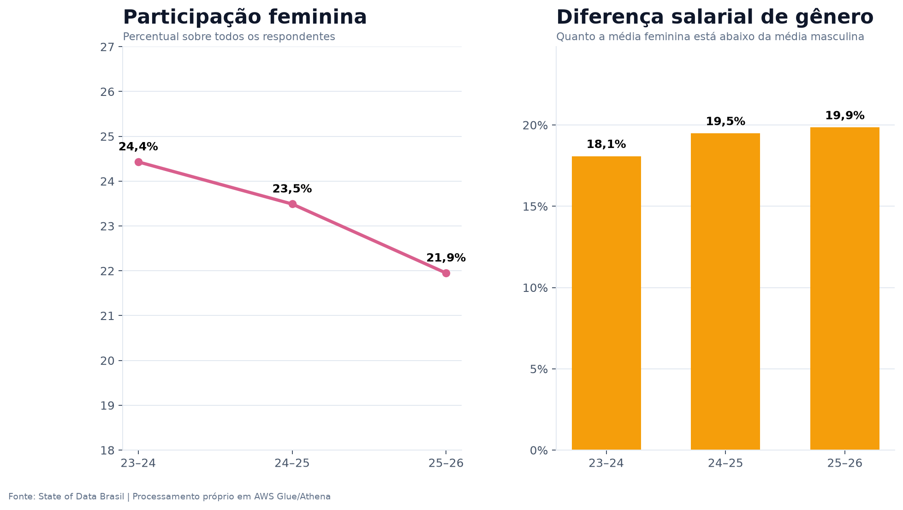
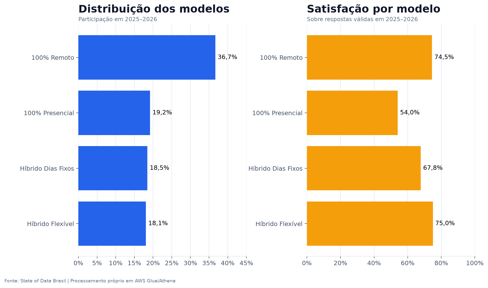
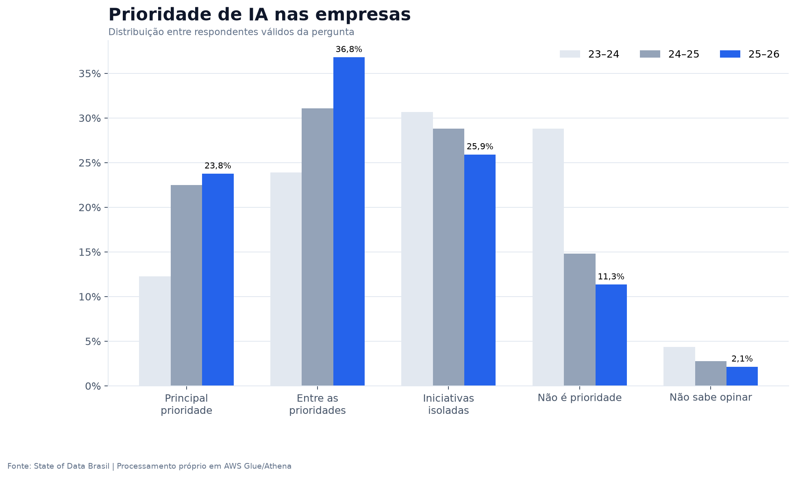
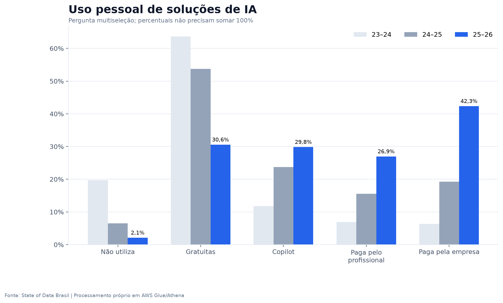

Diretrizes de Mercado para Contratação, Remuneração, Capacitação, Retenção e Governança de IA com base na série histórica State of Data Brasil (2023–2026)
db_state_of_data| Etapa de Auditoria | Regra Aplicada | Status |
|---|---|---|
| Deduplicação de Chave | Chave (ano, id) com hash SHA-256 para nulos | Totalmente Auditado |
| Estimativa Salarial | Ponto médio em faixas fechadas; 1.2x no topo aberto | Métrica Contínua |
| Completude Crítica | Gênero (100%), Região (97,2%), Salário (91,7%) | Acima dos Limites |
| Taxa de Satisfação | Denominador estrito sobre respostas válidas | Sem Distorção |
tc3-bronze-to-silver: Leitura com fail-fast, multiline e padronização.
tc3-silver-to-gold: Explode de tecnologias e percentis aproximados.
db_state_of_data para consultas interativas SQL de alta performance e baixo custo.








| Pilar Estratégico | Evidência dos Dados | Risco ou Oportunidade | Decisão Proposta | Indicador de Validação |
|---|---|---|---|---|
| 1. Contratação | Perfis especializados e de liderança técnica superam R$ 20 mil; concentração de 62% no Sudeste. | Disputa predatória inflaciona custos locais e alonga o fechamento de vagas. | Contratar sêniores cirurgicamente e testar piloto de contratação regional distribuída fora do Sudeste. | Tempo de fechamento de vagas e custo médio de atração. |
| 2. Capacitação | Python (92%) e SQL (84%) lideram com folga as preferências de linguagens. | Treinamentos dispersos em ferramentas de nicho geram baixo retorno. | Criar academia interna de dados focada em SQL avançado, Python e arquitetura cloud. | Taxa de conclusão de trilhas e promoção interna de Plenos. |
| 3. Retenção | Modelos flexíveis superam o presencial em mais de 20 p.p. na satisfação declarada. | Imposição 100% presencial arrisca aumento de turnover voluntário e menor satisfação dos profissionais. | Priorizar modelos híbridos flexíveis, definindo a frequência presencial através de piloto interno. | Turnover voluntário e eNPS (satisfação do colaborador). |
| 4. Diversidade | Participação feminina de 22,0% e diferença salarial média bruta de 19,4% (não controlada). | Homogeneidade limita inovação e prejudica a imagem institucional. | Metas de recrutamento afirmativo e aceleração de lideranças técnicas femininas. | % de mulheres em vagas sênior e paridade em cargos iguais. |
| 5. Inteligência Artificial | 42,3% usam IA paga pela empresa; 60,6% dos gestores veem IA como prioridade. | Dispersão de capital e riscos de segurança de dados bancários (LGPD). | Implantar sandbox corporativo seguro e homologar 3 casos de uso de crédito/fraude. | Ganho de tempo medido e ROI financeiro dos pilotos. |
Contratar sêniores cirurgicamente para arquitetura e liderança de dados, enquanto capacita a base interna em SQL avançado e Python.
Testar contratação fora do Sudeste para verificar disponibilidade real de talentos e adotar modelo híbrido flexível calibrado internamente.
Migrar de licenças dispersas para um sandbox bancário homologado, medindo ganhos de tempo e qualidade em casos de uso prioritários.
id_registro_tecnico via hash SHA-256 para respostas válidas com token nulo antes do dropDuplicates.2.h_faixa_salarial contém uma string divergente na fonte, mantida por auditoria (impacto de R$ 0,21).| Tema / Pergunta de Diagnóstico | Slide Correspondente | Evidência / Gráfico | Código / Script Fonte |
|---|---|---|---|
| 1. Estruturação do mercado brasileiro de Dados | Slides 5 e 6 | 01_kpis_executivos.png / 02_distribuicao_regional.png |
01_estrutura_mercado.csv / Athena Query 1 |
| 2. Perfis profissionais mais valorizados | Slide 7 | 04_remuneracao_perfis.png |
03_remuneracao_senioridade.csv / Athena Query 2 |
| 3. Cenário de diversidade de gênero nas carreiras | Slide 10 | 03_diversidade_genero.png |
04_diversidade_genero.csv / Athena Query 3 |
| 4. Adoção tecnológica de ferramentas e linguagens | Slides 8 e 9 | 09_uso_real_bi_cloud.png / 05_tecnologias_top5.png |
tecnologias_uso_2025_2026.csv / Athena Query 4 |
| 5. Índice de adoção de IA e seu impacto | Slides 12 e 13 | 06_prioridade_ia.png / 07_uso_pessoal_ia.png |
06a_prioridade_ia.csv / 06b_uso_pessoal_ia.csv |
| 6. Diferenças entre regiões, níveis e modelos | Slides 6, 7 e 11 | 08_modelos_trabalho_satisfacao.png |
07_modelos_trabalho.csv / Athena Query 6 |
| 7. Oportunidades e desafios para investir em Dados e IA | Slides 14, 15 e 16 | Matriz Estratégica, Roadmap 90d e 3 Decisões | Síntese Estratégica da Consultoria |
glue_job_bronze_to_silver.py / glue_job_silver_to_gold.pyscripts/analytics/queries_athena.sqlscripts/quality/validacao_qualidade.pydiagrams/arquitetura_aws.drawio